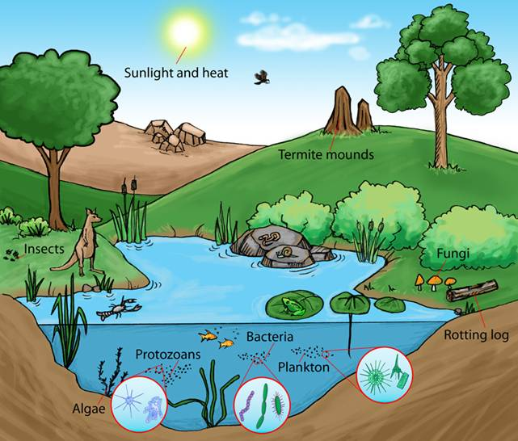

What is Environment and what are the necessities to make it clean
Starting with Environment
Environment is a place where humans as well as plants and animals live together in harmoy. So to retain this harmony it becomes necessary to keep our environment clean for fresh air and pollution free atmosphere . An unclean environment leads to bad deteriorating condition of a society in the form of contagious diseases etc. Hence it is essential to maintain a healthy eco system. Now you would be probably thinking what is this Ecosystem so let's move on to that
What is an Ecosystem

An ecosystem is a geographic area where plants , animals and other orgnaisms , as well as weather and landscape , work together to form a bubble of life . Ecosystem contain biotic or living , parts, as well as abiotic factors , or non living organisms . Biotic factors include plants, animals and other organisms . Abiotic factors include rocks , temperature and humidity.
Every factor in an ecosystem depends on each other factor , either directly or indirectly . A change in the temperature of an ecosystem will often affect what plants will grow there , for instance . Animals that depend on plants for food and shelter will have to adapt to the changes , move to another ecosystem , or perish.
Ecosystems can be very large or very small. Tide pools, the ponds left by the ocean as the tide goes out, are complete, tiny ecosystems. Tide pools contain seaweed, a kind of algae, which uses photosynthesis to create food. Herbivores such as abalone eat the seaweed. Carnivores such as sea stars eat other animals in the tide pool, such as clams or mussels. Tide pools depend on the changing level of ocean water. Some organisms, such as seaweed, thrive in an aquatic environment, when the tide is in and the pool is full. Other organisms, such as hermit crabs, cannot live underwater and depend on the shallow pools left by low tides. In this way, the biotic parts of the ecosystem depend on abiotic factors.
The whole surface of Earth is a series of connected ecosystems. Ecosystems are often connected in a larger biome. Biomes are large sections of land, sea, or atmosphere. Forests, ponds, reefs, and tundra are all types of biomes, for example. They're organized very generally, based on the types of plants and animals that live in them. Within each forest, each pond, each reef, or each section of tundra, you'll find many different ecosystems.
The biome of the Sahara Desert, for instance, includes a wide variety of ecosystems. The arid climate and hot weather characterize the biome. Within the Sahara are oasis ecosystems, which have date palm trees, freshwater, and animals such as crocodiles. The Sahara also has dune ecosystems, with the changing landscape determined by the wind. Organisms in these ecosystems, such as snakes or scorpions, must be able to survive in sand dunes for long periods of time. The Sahara even includes a marine environment, where the Atlantic Ocean creates cool fogs on the Northwest African coast. Shrubs and animals that feed on small trees, such as goats, live in this Sahara ecosystem.
Sahara Desert Pic
Even similar-sounding biomes could have completely different ecosystems. The biome of the Sahara Desert, for instance, is very different from the biome of the Gobi Desert in Mongolia and China. The Gobi is a cold desert, with frequent snowfall and freezing temperatures. Unlike the Sahara, the Gobi has ecosystems based not in sand, but kilometers of bare rock. Some grasses are able to grow in the cold, dry climate. As a result, these Gobi ecosystems have grazing animals such as gazelles and even takhi, an endangered species of wild horse.
Even the cold desert ecosystems of the Gobi are distinct from the freezing desert ecosystems of Antarctica. Antarcticas thick ice sheet covers a continent made almost entirely of dry, bare rock. Only a few mosses grow in this desert ecosystem, supporting only a few birds, such as skuas.
Threats to the ecosystem
For thousands of years, people have interacted with ecosystems. Many cultures developed around nearby ecosystems. Many Native American tribes of North Americas Great Plains developed a complex lifestyle based on the native plants and animals of plains ecosystems, for instance. Bison, a large grazing animal native to the Great Plains, became the most important biotic factor in many Plains Indians cultures, such as the Lakota or Kiowa. Bison are sometimes mistakenly called buffalo. These tribes used buffalo hides for shelter and clothing, buffalo meat for food, and buffalo horn for tools. The tallgrass prairie of the Great Plains supported bison herds, which tribes followed throughout the year.
As human populations have grown, however, people have overtaken many ecosystems. The tallgrass prairie of the Great Plains, for instance, became farmland. As the ecosystem shrunk, fewer bison could survive. Today, a few herds survive in protected ecosystems such as Yellowstone National Park.
In the tropical rain forest ecosystems surrounding the Amazon River in South America, a similar situation is taking place. The Amazon rain forest includes hundreds of ecosystems, including canopies, understories, and forest floors. These ecosystems support vast food webs. If humans will keep on constructing and clearing the forsest and trees then it will destroy the homes of plants and animals and will also destroy the ecosystem which we learnt is the life bubble and doing all this will at last going to harm us as if the ecosystem balance would be lost then there would be a huge problem in the Food chain like if we keep on cutting plants and trees then the oxygen would be less , food would be less and the plants and trees absorb carbon dioxide that will also not happen and the carbon dioxide would be more which a green house gas then the heat would not escape resulting in the increase of the temperature of the earth and global warming and there are many more consequences than this like increase in sea level , floods , soil erosion and same goes for animals if we keep on hunting animals then also there would not be any balance in the Food chain as they used to eat the plants and to keep the balance and also helped in things like nitrogen fixation cycle that's why our government is making these Natural Parks and Wildlife Sancturies to protect the ecosystem .
Now we would have also understood why there is a necessity to make the environment clean and green.